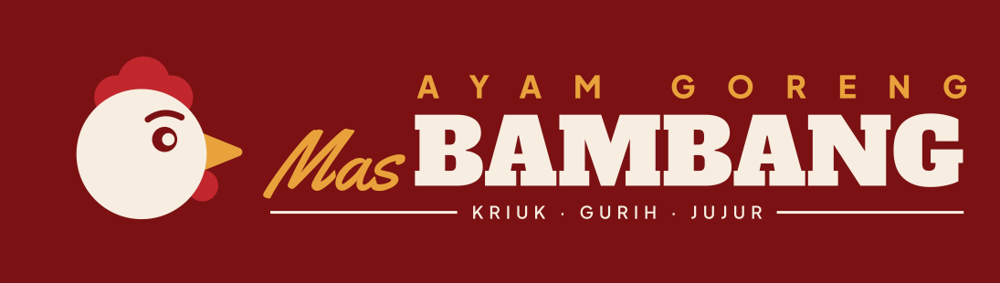
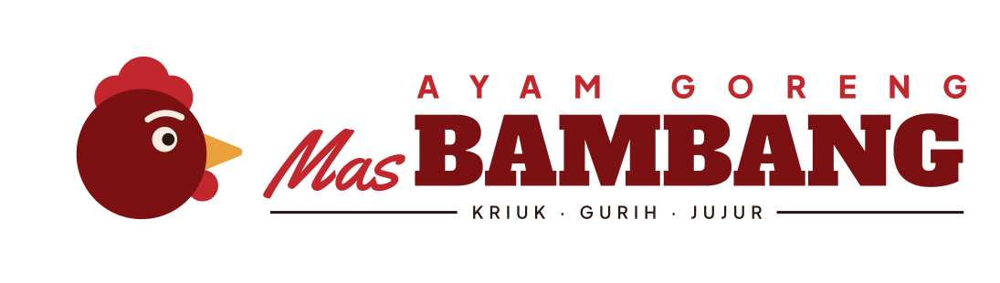
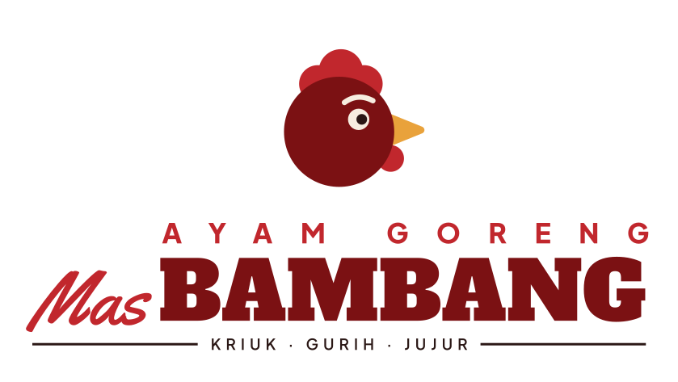
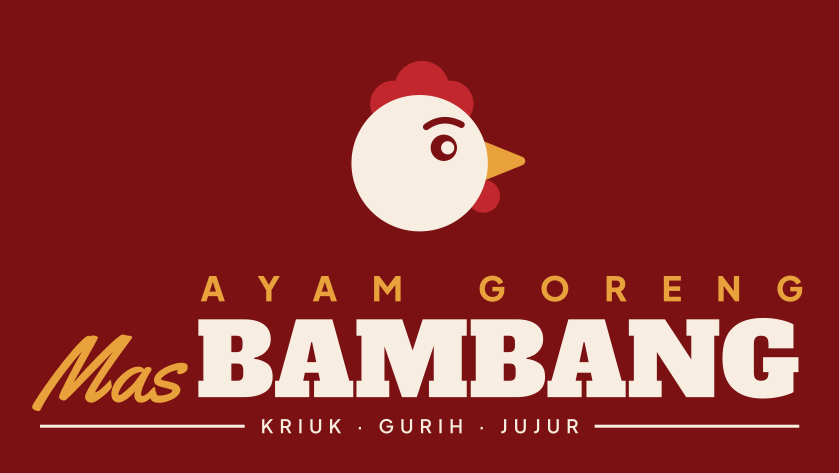
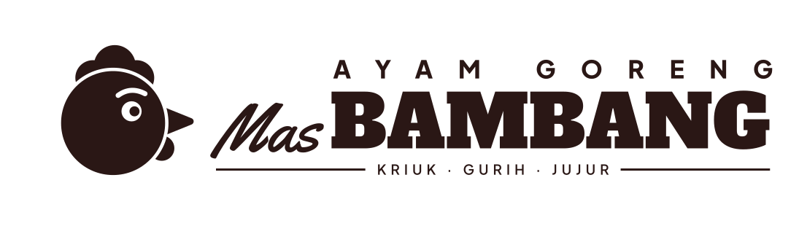
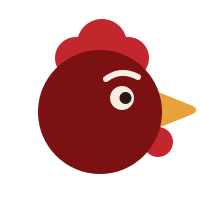
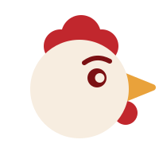
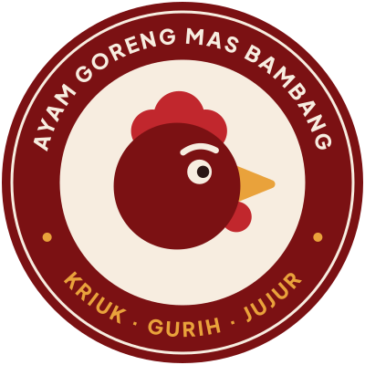
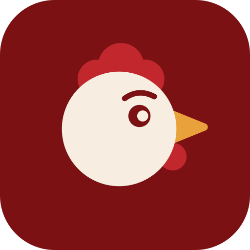

<title>Brand Kit Mas Bambang</title>
<meta name="claude:viewport-fit-sides" content="cover">
<link rel="preconnect" href="https://fonts.googleapis.com">
<link rel="preconnect" href="https://fonts.gstatic.com" crossorigin>
<link rel="stylesheet" href="https://fonts.googleapis.com/css2?family=Alfa+Slab+One&family=Plus+Jakarta+Sans:wght@400;500;600;800&family=Yellowtail&display=swap">
<style>
/* Layout: lembar panduan merek, satu kolom lebar 1080px; pita merah tua di atas, lalu bab bernomor berurutan seperti buku panduan cetak. */
:root {
  /* warna merek: tetap, tidak berubah mengikuti tema */
  --tua: #7B1113; --cabai: #C1272D; --kuning: #E9A23B; --krem: #F7EDE0; --arang: #2A1715; --kraft: #C9A27A;
  /* warna halaman: mengikuti tema */
  --bg: #FBF7F2; --surface: #FFFFFF; --fg: #2A1715; --muted: #74605B; --line: #E8DCD2; --accent: #7B1113; --chip: #F3E7DC;
  --display: "Alfa Slab One", "Rockwell", "Georgia", serif;
  --body: "Plus Jakarta Sans", "Segoe UI", system-ui, sans-serif;
  --script: "Yellowtail", "Brush Script MT", cursive;
}
@media (prefers-color-scheme: dark) {
  :root:not([data-theme="light"]) { --bg: #170D0C; --surface: #221413; --fg: #F3E6D8; --muted: #BFA79D; --line: #3A2522; --accent: #F08A80; --chip: #2E1B19; color-scheme: dark; }
}
:root[data-theme="dark"] { --bg: #170D0C; --surface: #221413; --fg: #F3E6D8; --muted: #BFA79D; --line: #3A2522; --accent: #F08A80; --chip: #2E1B19; color-scheme: dark; }

* { box-sizing: border-box; }
body { background: var(--bg); color: var(--fg); font-family: var(--body); font-size: 16px; line-height: 1.6; }
.wrap { max-width: 1080px; margin: 0 auto; padding-left: max(16px, env(safe-area-inset-left, 0px)); padding-right: max(16px, env(safe-area-inset-right, 0px)); }
img { max-width: 100%; display: block; }
h1, h2, h3 { text-wrap: balance; margin: 0; }
p { margin: 0; }
a { color: var(--accent); }
:focus-visible { outline: 3px solid var(--kuning); outline-offset: 3px; }

/* hero */
.hero { background: var(--tua) url(svg/pola-kemasan.svg) 0 0 / 120px 120px; color: var(--krem); position: relative; }
.hero::after { content: ""; position: absolute; inset: 0; background: linear-gradient(90deg, var(--tua) 35%, rgba(123,17,19,.82) 100%); }
.hero .wrap { position: relative; z-index: 1; padding-block: 56px 48px; display: grid; gap: 28px; }
.eyebrow { font-weight: 800; font-size: 12px; letter-spacing: .2em; text-transform: uppercase; }
.hero .eyebrow { color: var(--kuning); }
.hero img { width: min(640px, 100%); }
.hero p { max-width: 58ch; color: #EBD6C6; }
nav.toc { display: flex; flex-wrap: wrap; gap: 8px; }
nav.toc a { color: var(--krem); text-decoration: none; font-weight: 600; font-size: 14px; padding: 6px 14px; border: 1.5px solid rgba(247,237,224,.4); border-radius: 999px; }
nav.toc a:hover { background: var(--krem); color: var(--tua); }

/* bab */
section.ch { padding-block: 72px 8px; display: grid; gap: 28px; }
.ch-head { display: grid; grid-template-columns: auto 1fr; gap: 6px 20px; align-items: baseline; border-top: 3px solid var(--fg); padding-top: 16px; }
.ch-no { font-family: var(--display); font-size: 40px; line-height: 1; color: var(--accent); grid-row: span 2; }
.ch-head h2 { font-family: var(--display); font-weight: 400; font-size: clamp(26px, 4vw, 36px); line-height: 1.15; }
.ch-head p { color: var(--muted); max-width: 62ch; }
h3 { font-size: 13px; font-weight: 800; letter-spacing: .16em; text-transform: uppercase; color: var(--muted); }

.grid { display: grid; gap: 16px; }
.g2 { grid-template-columns: repeat(auto-fit, minmax(min(100%, 420px), 1fr)); }
.g3 { grid-template-columns: repeat(auto-fit, minmax(min(100%, 300px), 1fr)); }
.g4 { grid-template-columns: repeat(auto-fit, minmax(min(100%, 220px), 1fr)); }

.tile { display: grid; gap: 10px; min-width: 0; }
.plate { border-radius: 6px; display: grid; place-items: center; padding: 36px 28px; min-height: 220px; }
.plate img { width: 100%; max-width: 460px; }
.plate.sq img { max-width: 200px; }
.on-krem { background: var(--krem); }
.on-tua { background: var(--tua); }
.on-putih { background: #fff; border: 1px solid var(--line); }
.on-arang { background: var(--arang); }
.on-kuning { background: var(--kuning); }
.cap { display: flex; justify-content: space-between; gap: 12px; flex-wrap: wrap; font-size: 14px; }
.cap b { font-weight: 700; }
.cap code { font-size: 12px; color: var(--muted); }

/* area aman */
.clear { background: var(--krem); border-radius: 6px; padding: 40px 20px; display: grid; place-items: center; }
.clear-box { position: relative; outline: 2px dashed var(--cabai); outline-offset: 0; padding: 6%; width: min(560px, 100%); }
.clear-box img { outline: 1px solid rgba(123,17,19,.35); }
.x { position: absolute; font: 800 13px var(--body); color: var(--cabai); }
.x.t { top: 1.5%; left: 50%; transform: translateX(-50%); }
.x.l { left: 1.5%; top: 50%; transform: translateY(-50%); }
.rules { display: grid; gap: 12px; align-content: start; }
.rule { background: var(--surface); border: 1px solid var(--line); border-radius: 6px; padding: 16px 18px; display: grid; gap: 4px; }
.rule strong { font-size: 15px; }
.rule span { color: var(--muted); font-size: 14px; }
.num { font-variant-numeric: tabular-nums; }

/* anatomi */
.anat { display: grid; grid-template-columns: repeat(auto-fit, minmax(min(100%, 340px), 1fr)); gap: 28px; align-items: center; }
.anat-fig { background: var(--krem); border-radius: 6px; padding: 32px; position: relative; }
.anat-fig .in { position: relative; max-width: 340px; margin: 0 auto; }
.anat-fig .in img { width: 100%; }
.pin { position: absolute; width: 28px; height: 28px; margin: -14px 0 0 -14px; border-radius: 50%; background: var(--arang); color: var(--krem); font: 800 13px/28px var(--body); text-align: center; box-shadow: 0 0 0 3px var(--krem); }
.anat ol { list-style: none; padding: 0; margin: 0; display: grid; gap: 16px; counter-reset: a; }
.anat li { display: grid; grid-template-columns: 28px 1fr; gap: 14px; }
.anat li::before { counter-increment: a; content: counter(a); width: 28px; height: 28px; border-radius: 50%; background: var(--fg); color: var(--bg); font: 800 13px/28px var(--body); text-align: center; }
.anat li b { display: block; }
.anat li span { color: var(--muted); font-size: 15px; }

/* warna */
.swatches { display: grid; grid-template-columns: repeat(auto-fit, minmax(min(100%, 190px), 1fr)); gap: 12px; }
.sw { border: 1px solid var(--line); border-radius: 6px; overflow: hidden; background: var(--surface); display: grid; grid-template-rows: 150px auto; }
.sw .chip { padding: 14px; display: flex; align-items: flex-end; font: 400 22px/1.1 var(--display); }
.sw .meta { padding: 14px; display: grid; gap: 2px; font-size: 13px; }
.sw .meta b { font-size: 15px; }
.sw .meta .row { display: flex; justify-content: space-between; gap: 8px; font-variant-numeric: tabular-nums; }
.sw .meta .row span:first-child { color: var(--muted); }
.sw .meta p { color: var(--muted); margin-top: 6px; }
button.copy { all: unset; cursor: pointer; font-weight: 700; color: var(--accent); }
button.copy:focus-visible { outline: 2px solid var(--kuning); }
.ratio { display: flex; height: 56px; border-radius: 6px; overflow: hidden; border: 1px solid var(--line); }
.ratio div { display: flex; align-items: flex-end; padding: 8px; font: 800 12px var(--body); min-width: 0; }
.pairs { display: grid; grid-template-columns: repeat(auto-fit, minmax(min(100%, 240px), 1fr)); gap: 12px; }
.pair { border-radius: 6px; padding: 18px; display: grid; gap: 6px; border: 1px solid var(--line); }
.pair .big { font: 400 28px/1 var(--display); }
.pair .lab { font-size: 13px; font-weight: 600; font-variant-numeric: tabular-nums; }

/* tipografi */
.type { display: grid; gap: 16px; }
.face { background: var(--surface); border: 1px solid var(--line); border-radius: 6px; padding: 24px; display: grid; grid-template-columns: repeat(auto-fit, minmax(min(100%, 260px), 1fr)); gap: 20px; align-items: center; }
.face .spec { min-width: 0; overflow-wrap: anywhere; }
.face .role { display: grid; gap: 6px; font-size: 15px; }
.face .role b { font-size: 17px; }
.face .role span { color: var(--muted); }
.scale { border: 1px solid var(--line); border-radius: 6px; overflow-x: auto; background: var(--surface); }
.scale table { border-collapse: collapse; width: 100%; min-width: 640px; }
.scale td, .scale th { padding: 14px 18px; border-bottom: 1px solid var(--line); text-align: left; vertical-align: middle; }
.scale th { font-size: 12px; letter-spacing: .14em; text-transform: uppercase; color: var(--muted); }
.scale tr:last-child td { border-bottom: 0; }
.scale td.m { font-size: 13px; color: var(--muted); white-space: nowrap; font-variant-numeric: tabular-nums; }

/* aplikasi */
.mock { border-radius: 6px; overflow: hidden; position: relative; }
.box { aspect-ratio: 1; background: var(--kraft); display: grid; grid-template-rows: 18% 1fr auto; max-width: 100%; }
.box .band { min-height: 0;  background: var(--tua) url(svg/pola-kemasan.svg) 0 0 / 70px 70px; }
.box .mid { display: grid; place-items: center; }
.box .mid img { width: 44%; }
.box .foot { text-align: center; padding: 10px 12px 16px; font: 400 15px var(--script); color: var(--arang); font-size: clamp(16px, 2.2vw, 22px); }
.banner { aspect-ratio: 3 / 1; background: var(--tua); display: grid; grid-template-columns: 1fr auto; align-items: center; gap: 4%; padding: 3% 4%; max-width: 100%; }
.banner img { width: 100%; }
.banner .menu { color: var(--krem); text-align: right; display: grid; gap: 4px; font-weight: 800; font-size: clamp(9px, 1.5vw, 15px); letter-spacing: .12em; text-transform: uppercase; }
.banner .menu .jam { color: var(--kuning); }
.ig { aspect-ratio: 1; background: var(--krem); display: grid; grid-template-rows: auto 1fr auto; padding: 7%; color: var(--tua); max-width: 100%; }
.ig .top { display: flex; justify-content: space-between; align-items: center; }
.ig .top img { width: 22%; }
.ig .top span { font: 800 clamp(9px, 1.2vw, 12px) var(--body); letter-spacing: .2em; color: var(--cabai); }
.ig .body { align-self: center; display: grid; gap: 2px; }
.ig .mas { font: 400 clamp(28px, 5vw, 48px)/1 var(--script); color: var(--cabai); }
.ig .h { font: 400 clamp(30px, 6vw, 58px)/.95 var(--display); }
.ig .price { justify-self: start; background: var(--kuning); color: var(--arang); font: 400 clamp(20px, 3.4vw, 32px)/1 var(--display); padding: 10px 14px; border-radius: 4px; margin-top: 12px; transform: rotate(-3deg); }
.ig .foot { font-size: clamp(11px, 1.4vw, 14px); font-weight: 600; color: var(--arang); }
.note { font-size: 13px; color: var(--muted); }

/* aturan */
.dd { display: grid; grid-template-columns: repeat(auto-fit, minmax(min(100%, 230px), 1fr)); gap: 12px; }
.dd .t { display: grid; gap: 8px; }
.dd .p { aspect-ratio: 16 / 10; border-radius: 6px; display: grid; place-items: center; padding: 18px; overflow: hidden; max-width: 100%; }
.dd .p img { width: 100%; }
.verdict { font-size: 14px; display: flex; gap: 8px; align-items: baseline; }
.verdict b { font-size: 11px; letter-spacing: .14em; padding: 2px 8px; border-radius: 3px; }
.ok b { background: #1F6B3A; color: #fff; }
.no b { background: var(--cabai); color: #fff; }

/* nada bicara */
.voice { display: grid; grid-template-columns: repeat(auto-fit, minmax(min(100%, 300px), 1fr)); gap: 16px; }
.voice .v { background: var(--surface); border: 1px solid var(--line); border-radius: 6px; padding: 20px; display: grid; gap: 10px; align-content: start; }
.voice .v h4 { margin: 0; font: 400 22px var(--display); color: var(--accent); }
.voice .say { font-weight: 600; }
.voice .say::before { content: "Ya: "; color: #1F8A4C; font-weight: 800; }
.voice .avoid { color: var(--muted); text-decoration: line-through; text-decoration-color: var(--cabai); }
.voice .avoid::before { content: "Hindari: "; color: var(--cabai); font-weight: 800; text-decoration: none; display: inline-block; }

/* file */
.files { border: 1px solid var(--line); border-radius: 6px; overflow-x: auto; background: var(--surface); }
.files table { border-collapse: collapse; width: 100%; min-width: 560px; font-size: 14px; }
.files td, .files th { padding: 10px 16px; border-bottom: 1px solid var(--line); text-align: left; }
.files th { font-size: 12px; letter-spacing: .14em; text-transform: uppercase; color: var(--muted); }
.files code { font-size: 13px; }
footer { padding-block: 64px 48px; color: var(--muted); font-size: 14px; }

@media (prefers-reduced-motion: no-preference) { nav.toc a { transition: background .15s, color .15s; } }
</style>

<header class="hero">
  <div class="wrap">
    <span class="eyebrow">Panduan Merek · Versi 1.0 · November 2026</span>
    
    <p>Aturan pakai logo, simbol, warna, huruf, dan nada bicara Ayam Goreng Mas Bambang. Pegang panduan ini setiap kali membuat spanduk, kemasan, menu, atau konten media sosial, supaya brand selalu dikenali dari jauh.</p>
    <nav class="toc" aria-label="Isi">
      <a href="#logo">Logo</a><a href="#simbol">Simbol</a><a href="#warna">Warna</a><a href="#huruf">Huruf</a><a href="#aplikasi">Aplikasi</a><a href="#aturan">Aturan</a><a href="#nada">Nada bicara</a><a href="#file">File</a>
    </nav>
  </div>
</header>

<main class="wrap">

  <section class="ch" id="logo">
    <div class="ch-head"><span class="ch-no">01</span><h2>Logo</h2><p>Logo terdiri dari simbol kepala ayam dan tulisan "Mas BAMBANG". Pakai versi horizontal sebagai pilihan utama. Versi tegak untuk ruang yang sempit dan tinggi, misalnya stiker, kotak, dan gerobak.</p></div>
    <div class="grid g2">
      <div class="tile"><div class="plate on-krem"></div><div class="cap"><b>Utama · berwarna</b><code>logo-horizontal-warna</code></div></div>
      <div class="tile"><div class="plate on-tua"></div><div class="cap"><b>Utama · terang, untuk latar merah tua</b><code>logo-horizontal-terang</code></div></div>
      <div class="tile"><div class="plate on-krem"></div><div class="cap"><b>Tegak · berwarna</b><code>logo-tegak-warna</code></div></div>
      <div class="tile"><div class="plate on-tua"></div><div class="cap"><b>Tegak · terang</b><code>logo-tegak-terang</code></div></div>
      <div class="tile"><div class="plate on-putih"></div><div class="cap"><b>Satu warna · gelap</b><code>logo-horizontal-hitam</code></div></div>
      <div class="tile"><div class="plate on-arang"></div><div class="cap"><b>Satu warna · putih</b><code>logo-horizontal-putih</code></div></div>
    </div>

    <h3>Area aman &amp; ukuran minimum</h3>
    <div class="grid g2">
      <div class="clear">
        <div class="clear-box">
          <span class="x t">X</span><span class="x l">X</span>
          
        </div>
      </div>
      <div class="rules">
        <div class="rule"><strong>Area aman = X</strong><span>X adalah tinggi huruf "B" pada BAMBANG. Kosongkan jarak minimal X di keempat sisi logo dari teks, foto, atau tepi kemasan.</span></div>
        <div class="rule"><strong class="num">Logo horizontal: min. 35 mm / 180 px</strong><span>Di bawah ukuran ini, tulisan KRIUK · GURIH · JUJUR tidak terbaca. Pakai logo tegak atau simbol saja.</span></div>
        <div class="rule"><strong class="num">Simbol: min. 10 mm / 24 px</strong><span>Untuk ikon aplikasi ojol, favicon, dan stempel kecil di kertas nasi.</span></div>
      </div>
    </div>
  </section>

  <section class="ch" id="simbol">
    <div class="ch-head"><span class="ch-no">02</span><h2>Simbol "Si Jengger"</h2><p>Kepala ayam bulat dengan alis naik, ramah dan percaya diri, seperti Mas Bambang menyapa pelanggan. Setiap bagian punya arti.</p></div>
    <div class="anat">
      <div class="anat-fig">
        <div class="in">
          
          <span class="pin" style="left:51%;top:16%">1</span>
          <span class="pin" style="left:61%;top:33%">2</span>
          <span class="pin" style="left:89%;top:55%">3</span>
          <span class="pin" style="left:79%;top:76%">4</span>
        </div>
      </div>
      <ol>
        <li><div><b>Jengger tiga bulatan</b><span>Tiga janji Mas Bambang: kriuk, gurih, jujur. Ini juga bentuk yang paling mudah dikenali dari jauh.</span></div></li>
        <li><div><b>Alis naik</b><span>Ekspresi ramah dan sedikit jahil. Jangan diganti alis marah atau sedih.</span></div></li>
        <li><div><b>Paruh Kuning Kremes</b><span>Satu-satunya kuning di simbol, mewakili warna ayam goreng yang matang sempurna.</span></div></li>
        <li><div><b>Pial Merah Cabai</b><span>Tanda sambal. Warnanya sama dengan jengger supaya simbol tetap seimbang.</span></div></li>
      </ol>
    </div>
    <div class="grid g4">
      <div class="tile"><div class="plate sq on-krem"></div><div class="cap"><b>Simbol berwarna</b><code>simbol-warna</code></div></div>
      <div class="tile"><div class="plate sq on-tua"></div><div class="cap"><b>Simbol terang</b><code>simbol-terang</code></div></div>
      <div class="tile"><div class="plate sq on-putih"></div><div class="cap"><b>Stempel bulat</b><code>stempel-bulat</code></div></div>
      <div class="tile"><div class="plate sq on-krem"></div><div class="cap"><b>Ikon aplikasi &amp; avatar</b><code>ikon-aplikasi</code></div></div>
    </div>
    <div class="tile">
      <div class="mock" style="height:160px;background:var(--tua) url(svg/pola-kemasan.svg) 0 0 / 160px 160px"></div>
      <div class="cap"><b>Pola kemasan: simbol Merah Cabai dan remah kremes di atas Merah Jengger. Untuk kertas nasi, tas, dan latar spanduk.</b><code>pola-kemasan</code></div>
    </div>
  </section>

  <section class="ch" id="warna">
    <div class="ch-head"><span class="ch-no">03</span><h2>Warna</h2><p>Merah tua adalah warna yang paling banyak tampil. Warna lain hanya pendukung. Nilai CMYK di bawah adalah titik awal; minta proof cetak dulu karena kertas kraft membuat warna lebih gelap.</p></div>
    <div class="swatches">
      <div class="sw"><div class="chip" style="background:var(--tua);color:var(--krem)">Merah Jengger</div><div class="meta"><b>Utama</b><div class="row"><span>HEX</span><button class="copy" data-c="#7B1113">#7B1113</button></div><div class="row"><span>RGB</span><span>123 · 17 · 19</span></div><div class="row"><span>CMYK</span><span>0 · 86 · 85 · 52</span></div><p>Latar spanduk, kemasan, tulisan BAMBANG.</p></div></div>
      <div class="sw"><div class="chip" style="background:var(--cabai);color:var(--krem)">Merah Cabai</div><div class="meta"><b>Pendukung</b><div class="row"><span>HEX</span><button class="copy" data-c="#C1272D">#C1272D</button></div><div class="row"><span>RGB</span><span>193 · 39 · 45</span></div><div class="row"><span>CMYK</span><span>0 · 80 · 77 · 24</span></div><p>Jengger, "Mas", label pedas, tombol promo.</p></div></div>
      <div class="sw"><div class="chip" style="background:var(--kuning);color:var(--arang)">Kuning Kremes</div><div class="meta"><b>Aksen</b><div class="row"><span>HEX</span><button class="copy" data-c="#E9A23B">#E9A23B</button></div><div class="row"><span>RGB</span><span>233 · 162 · 59</span></div><div class="row"><span>CMYK</span><span>0 · 31 · 75 · 9</span></div><p>Paruh, harga, stiker promo. Hanya di atas merah atau arang.</p></div></div>
      <div class="sw"><div class="chip" style="background:var(--krem);color:var(--tua);border-bottom:1px solid var(--line)">Krem Tepung</div><div class="meta"><b>Latar</b><div class="row"><span>HEX</span><button class="copy" data-c="#F7EDE0">#F7EDE0</button></div><div class="row"><span>RGB</span><span>247 · 237 · 224</span></div><div class="row"><span>CMYK</span><span>0 · 4 · 9 · 3</span></div><p>Latar menu, feed IG, tulisan di atas merah.</p></div></div>
      <div class="sw"><div class="chip" style="background:var(--arang);color:var(--krem)">Cokelat Arang</div><div class="meta"><b>Teks</b><div class="row"><span>HEX</span><button class="copy" data-c="#2A1715">#2A1715</button></div><div class="row"><span>RGB</span><span>42 · 23 · 21</span></div><div class="row"><span>CMYK</span><span>0 · 45 · 50 · 84</span></div><p>Teks panjang, versi logo satu warna. Pakai ini, bukan hitam pekat.</p></div></div>
    </div>
    <h3>Proporsi pemakaian</h3>
    <div class="ratio" role="img" aria-label="Proporsi warna: Merah Jengger 45 persen, Krem Tepung 30 persen, Kuning Kremes 12 persen, Merah Cabai 8 persen, Cokelat Arang 5 persen">
      <div style="flex:45;background:var(--tua);color:var(--krem)">45%</div>
      <div style="flex:30;background:var(--krem);color:var(--tua)">30%</div>
      <div style="flex:12;background:var(--kuning);color:var(--arang)">12%</div>
      <div style="flex:8;background:var(--cabai);color:var(--krem)">8%</div>
      <div style="flex:5;background:var(--arang);color:var(--krem)">5%</div>
    </div>
    <h3>Pasangan warna yang terbaca</h3>
    <div class="pairs">
      <div class="pair" style="background:var(--tua);color:var(--krem)"><span class="big">Kriuk!</span><span class="lab">Krem di atas Merah Jengger · 9,4 : 1 · aman untuk semua teks</span></div>
      <div class="pair" style="background:var(--tua);color:var(--kuning)"><span class="big">Rp15rb</span><span class="lab">Kuning di atas Merah Jengger · 5,0 : 1 · judul &amp; harga</span></div>
      <div class="pair" style="background:var(--krem);color:var(--cabai)"><span class="big">Pedas</span><span class="lab">Cabai di atas Krem · 5,1 : 1 · judul &amp; label</span></div>
      <div class="pair" style="background:var(--krem);color:var(--kuning)"><span class="big">Jangan</span><span class="lab" style="color:var(--arang)">Kuning di atas Krem · 1,9 : 1 · tidak terbaca, hindari</span></div>
    </div>
  </section>

  <section class="ch" id="huruf">
    <div class="ch-head"><span class="ch-no">04</span><h2>Huruf</h2><p>Tiga jenis huruf, semuanya gratis dari Google Fonts dan boleh dipakai komersial. Plus Jakarta Sans dirancang oleh studio Indonesia dan terinspirasi dari Jakarta.</p></div>
    <div class="type">
      <div class="face"><div class="spec" style="font:400 clamp(40px,7vw,64px)/1 var(--display);color:var(--accent)">BAMBANG<br><span style="font-size:.5em">Aa Bb 1234 Rp</span></div><div class="role"><b>Alfa Slab One · Judul</b><span>Huruf tebal bergaya papan nama warung. Untuk judul, nama menu, dan harga. Tulis dengan huruf kapital atau kapital awal, jangan untuk kalimat panjang.</span></div></div>
      <div class="face"><div class="spec" style="font:400 clamp(48px,8vw,76px)/1 var(--script);color:var(--cabai)">Mas<br><span style="font-size:.6em">Mantap tenan</span></div><div class="role"><b>Yellowtail · Aksen</b><span>Tulisan tangan untuk kata "Mas" dan sapaan pendek 1 sampai 3 kata. Maksimal sekali dalam satu desain.</span></div></div>
      <div class="face"><div class="spec"><span style="font:800 13px var(--body);letter-spacing:.2em">AYAM GORENG · KRIUK · GURIH · JUJUR</span><br><span style="font:500 18px/1.5 var(--body)">Ayam kampung diungkep bumbu kuning semalam, digoreng kering, disajikan dengan sambal bawang yang diulek tiap pagi.</span></div><div class="role"><b>Plus Jakarta Sans · Teks</b><span>ExtraBold kapital dengan spasi lebar untuk label. Medium atau Regular untuk deskripsi menu, caption, dan teks panjang.</span></div></div>
    </div>
    <div class="scale">
      <table>
        <thead><tr><th>Peran</th><th>Contoh</th><th>Huruf · ukuran</th></tr></thead>
        <tbody>
          <tr><td>Judul besar</td><td style="font:400 40px/1.1 var(--display);color:var(--accent)">Paket Hemat</td><td class="m">Alfa Slab One · 40 / 44</td></tr>
          <tr><td>Judul bagian</td><td style="font:400 26px/1.2 var(--display)">Ayam Kremes</td><td class="m">Alfa Slab One · 26 / 32</td></tr>
          <tr><td>Aksen</td><td style="font:400 30px/1 var(--script);color:var(--cabai)">Mas</td><td class="m">Yellowtail · 30</td></tr>
          <tr><td>Label</td><td style="font:800 12px var(--body);letter-spacing:.2em">LEVEL PEDAS 3</td><td class="m">Jakarta ExtraBold · 12 · spasi 0,2em</td></tr>
          <tr><td>Teks</td><td style="font:500 16px/1.6 var(--body)">Nasi, ayam paha, lalapan, sambal bawang.</td><td class="m">Jakarta Medium · 16 / 26</td></tr>
        </tbody>
      </table>
    </div>
  </section>

  <section class="ch" id="aplikasi">
    <div class="ch-head"><span class="ch-no">05</span><h2>Aplikasi</h2><p>Contoh logo dan warna dipakai di kemasan, spanduk warung, dan unggahan Instagram.</p></div>
    <div class="grid g3">
      <div class="tile"><div class="mock box"><div class="band"></div><div class="mid"></div><div class="foot">Panas-panas, langsung dimakan ya!</div></div><div class="cap"><b>Kotak nasi kraft</b><span class="note">sablon 2 warna</span></div></div>
      <div class="tile"><div class="mock ig"><div class="top"><span>@AYAMMASBAMBANG</span></div><div class="body"><span class="mas">Mas Bambang</span><span class="h">PAKET<br>HEMAT</span><span class="price">Rp15rb</span></div><div class="foot">Nasi · Ayam paha · Sambal · Es teh</div></div><div class="cap"><b>Post Instagram 1:1</b><span class="note">harga hanya contoh</span></div></div>
      <div class="tile"><div class="mock box" style="background:var(--tua);grid-template-rows:1fr auto"><div class="mid" style="padding:8%"></div><div class="foot" style="color:var(--kuning)">Kaos kru · sablon depan</div></div><div class="cap"><b>Seragam kru</b><span class="note">kaos merah tua, sablon krem &amp; kuning</span></div></div>
    </div>
    <div class="tile">
      <div class="mock banner"><div class="menu"><span>Ayam goreng · Geprek · Penyet</span><span>Kremes gratis</span><span class="jam">Buka 10.00 – 22.00</span></div></div>
      <div class="cap"><b>Spanduk warung 300 × 100 cm</b><span class="note">cetak MMT, logo minimal setinggi 40 cm</span></div>
    </div>
  </section>

  <section class="ch" id="aturan">
    <div class="ch-head"><span class="ch-no">06</span><h2>Aturan pakai logo</h2><p>Logo hanya boleh dipakai dalam versi yang tersedia di folder file. Jangan digambar ulang atau diubah.</p></div>
    <div class="dd">
      <div class="t"><div class="p on-krem"></div><div class="verdict ok"><b>BOLEH</b>Versi berwarna di atas krem atau putih</div></div>
      <div class="t"><div class="p on-tua"></div><div class="verdict ok"><b>BOLEH</b>Versi terang di atas Merah Jengger</div></div>
      <div class="t"><div class="p on-krem"></div><div class="verdict no"><b>JANGAN</b>Ditarik atau digepengkan</div></div>
      <div class="t"><div class="p on-krem"></div><div class="verdict no"><b>JANGAN</b>Mengganti warna di luar palet</div></div>
      <div class="t"><div class="p" style="background:var(--cabai)"></div><div class="verdict no"><b>JANGAN</b>Versi berwarna di atas latar merah</div></div>
      <div class="t"><div class="p on-krem"></div><div class="verdict no"><b>JANGAN</b>Diputar atau diberi bayangan</div></div>
    </div>
  </section>

  <section class="ch" id="nada">
    <div class="ch-head"><span class="ch-no">07</span><h2>Nada bicara</h2><p>Mas Bambang bicara seperti penjual warung langganan: akrab, lugas, sedikit bercanda. Tagline utama: <b>"Kriuknya kedengeran sampai tetangga."</b></p></div>
    <div class="voice">
      <div class="v"><h4>Hangat</h4><p class="say">Sudah lapar, Kak? Ayamnya baru angkat dari wajan.</p><p class="avoid">Silakan melakukan pemesanan melalui kanal kami.</p></div>
      <div class="v"><h4>Jujur</h4><p class="say">Ayam kampung, minyak ganti tiap hari, sambal diulek pagi ini.</p><p class="avoid">Produk premium berkualitas terbaik nomor satu.</p></div>
      <div class="v"><h4>Kocak secukupnya</h4><p class="say">Level 5 bukan buat yang besok ada rapat.</p><p class="avoid">PEDASSS BANGET GILAAA 🔥🔥🔥🔥</p></div>
    </div>
  </section>

  <section class="ch" id="file">
    <div class="ch-head"><span class="ch-no">08</span><h2>Daftar file</h2><p>Semua file ada dalam format SVG (vektor, teks sudah dikonversi ke kurva) dan PNG transparan selebar 2000 px. Kirim versi SVG ke percetakan, dan pakai PNG untuk media sosial atau aplikasi ojol.</p></div>
    <div class="files">
      <table>
        <thead><tr><th>File</th><th>Pakai untuk</th></tr></thead>
        <tbody>
          <tr><td><code>logo-horizontal-warna</code></td><td>Pilihan utama: menu, kemasan, kop nota</td></tr>
          <tr><td><code>logo-horizontal-terang</code></td><td>Spanduk, neon box, latar merah</td></tr>
          <tr><td><code>logo-horizontal-hitam / -putih</code></td><td>Sablon 1 warna, stempel nota, fotokopi</td></tr>
          <tr><td><code>logo-tegak-warna / -terang</code></td><td>Stiker, gerobak, kaos, kotak</td></tr>
          <tr><td><code>simbol-warna / -terang / -hitam</code></td><td>Favicon, watermark foto, ruang sempit</td></tr>
          <tr><td><code>wordmark-warna</code></td><td>Tulisan saja, saat simbol sudah tampil di tempat lain</td></tr>
          <tr><td><code>stempel-bulat</code></td><td>Stiker segel, tutup cup, cap kertas nasi</td></tr>
          <tr><td><code>ikon-aplikasi</code></td><td>Foto profil GoFood, GrabFood, ShopeeFood, IG, WhatsApp</td></tr>
          <tr><td><code>pola-kemasan</code></td><td>Kertas nasi, tas, latar desain (diulang)</td></tr>
        </tbody>
      </table>
    </div>
  </section>

</main>
<footer><div class="wrap">Brand Kit Ayam Goreng Mas Bambang · v1.0 · Huruf: Alfa Slab One &amp; Plus Jakarta Sans (SIL OFL), Yellowtail (Apache 2.0).</div></footer>

<script>
document.querySelectorAll('button.copy').forEach(function (b) {
  b.addEventListener('click', function () {
    var c = b.dataset.c;
    var done = function () { b.textContent = 'Tersalin'; setTimeout(function () { b.textContent = c; }, 1200); };
    if (navigator.clipboard && navigator.clipboard.writeText) {
      navigator.clipboard.writeText(c).then(done, function () { selectText(b); });
    } else { selectText(b); }
  });
});
function selectText(el) { var r = document.createRange(); r.selectNodeContents(el); var s = getSelection(); s.removeAllRanges(); s.addRange(r); }
</script>
